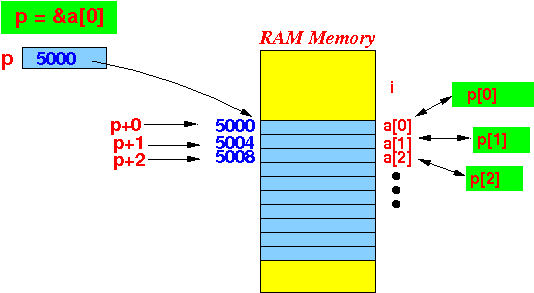
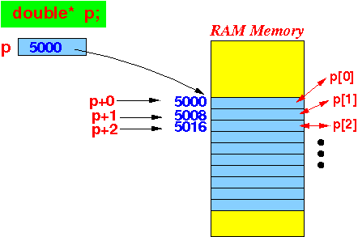

- Fact:
- The C programming language does not have dynamic array as a language feature
However:
- The C programming language does have sufficient number of powerful features that a C programmer can implement dynamic array (among other things) using these features !!!
- Features in C that
enable you to
implement your own
dynamic array:
- Memory management functions:
malloc( ) (we will use calloc() for arrays) free( )
- Pointer arithmetic:
if p points to a[0] then *(p + i) ≡ p[i] is an alias for a[i]Graphically illustrated:

- Memory management functions:
- Steps to
create a
dynamic array
(of any data type):
- Define a
reference variable
(say p)
of the desired data type
Example: suppose we want to create a dynamic array of double variables
double* p; // reference variable to a double variable
Illustrated:
- Allocate memory cells for
the array elements and
make p
point to the
first array element:

- The array elements
can now be accessed as:
p[0] first array element p[1] second array element p[2] third array element ... p[i] ith array element
- Define a
reference variable
(say p)
of the desired data type
- Fact:
- Each computer system has its own
peculiar
memory alignment requirements
- The malloc() function
only alocate memory cells
for one variable:
- malloc(nBytes) will allocates a block of memory cells of at least nBytes bytes that us suitably aligned for any usage.
- Each computer system has its own
peculiar
memory alignment requirements
- To allocate memory cells
for N consecutive variable
(= array),
you must use this function:
calloc( nElems, nBytes ) Example: calloc( 10, sizeof(double) ) // Allocate space for 10 elements of double variable (= array of 10 double)The calloc function:
- The calloc()
function allocates space
for an array
of
nElems
elements
of
size nBytes.
Note:
- The allocated space will also be initialized to zeros.
- The calloc()
function allocates space
for an array
of
nElems
elements
of
size nBytes.
- We have now learn everything
we will need to
build our own
dynamic array
in C
- C program that illustrates a
dynamic array of
double variables:
int main(int argc, char *argv[]) { int i; double* p; // We uses this reference variable to access // dynamically created array elements p = calloc(10, sizeof(double) ); // Make double array of 10 elements for ( i = 0; i < 10; i++ ) p[i] = i; // put value i in array element i for ( i = 0; i < 10; i++ ) printf("p[%d] = %lf\n", i, p[i] ); free(p); // Un-reserve the memory for array }Output:
p[0] = 0.000000 p[1] = 1.000000 p[2] = 2.000000 p[3] = 3.000000 p[4] = 4.000000 p[5] = 5.000000 p[6] = 6.000000 p[7] = 7.000000 p[8] = 8.000000 p[9] = 9.000000
- Example Program:
(Demo above code)

- Prog file: /home/cs255001/demo/C/set2/dyn-array1.c
How to run the program:
- To compile: gcc dyn-array1.c
- To run: ./a.out